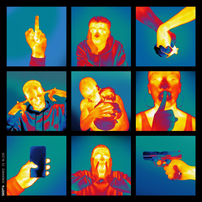

Song Lyrics:
Same Old Story - Skepta
Intro]
Bruv, I don't wanna listen to her
And she don't wanna listen to me
Last week we're talkin' together forever
This week, more fish in the sea
Shit's just killin' me, G
[Chorus]
I had the perfect picture
It was all laid out for me
But I feel like I'm in love with the pain, fam
'Cause it's the same old story
Same old questions, what's your body count?
Who were you linkin' before me?
And I hope she don't ask me back
'Cause my life like an episode of Maury
[Verse 1]
I've run out of excuses
The truth is I'm so cold, I'm so frozen
Too many times my heart has been broken
And I can't even do the fake love, there ain't no pretendin'
Thought that I found my partner-in-crime, my co-defendant
But it's like watchin' a film and you already know the endin'
See me, I think I think too much
Try to keep it short and sweet but I say too much
Now she wanna go back and forth, she wanna play two touch
It's back to square one
Both said things that shouldn't have been said
Did things that shouldn't have been done
Wish I could turn back time, man, I wish that I could get a rerun, 'cause...
[Chorus]
I had the perfect picture
It was all laid out for me
But I feel like I'm in love with the pain, fam
'Cause it's the same old story
Same old questions, what's your body count?
Who were you linkin' before me?
And I hope she don't ask me back
'Cause my life like an episode of Maury
I had the perfect picture
It was all laid out for me
But I feel like I'm in love with the pain, fam
'Cause it's the same old story
Same old questions, what's your body count?
Who were you linkin' before me?
And I hope she don't ask me back
'Cause my life like an episode of Maury
[Verse 2]
Said she loved me 'cause I wasn't like the rest
I rock and roll, I don't like the stress
Now the friendship's based on how quick I reply to text
She's talkin' reckless, I gotta bite my tongue
Don't wanna say anything I might regret
Died a thousand deaths
Man, I wore so much Ed Hardy, how could I forget?
That love kills slowly
Still, everybody tryna do holy matrimony
More time, one of them needs a trophy
And the other one's scared to be lonely
Every day another one falls off
They link the wrong ting and got way too cosy
Valentine's Day, it's all sweet and rosy
Spend every other day just tryna score points like Kobe
Nobody wants to lose but the winner gets nothin'
Spent summer time stuntin'
Then winter time comes, everybody starts cuffin'
You know love takes time
But relationship goals got everyone rushin'
You get a feelin' it's way too good to be true
So now you just tryna find somethin'
Tryna find a reason
Friends askin' me how I'm doin'
I said, "Same shit, different season"
My ex got a new boyfriend, I'm just tryna get even
We don't hate each other, no, we just came to the end of the road
She went one direction, I went the other
Guess I gotta find me a new lover
[Chorus]
I had the perfect picture
It was all laid out for me
But I feel like I'm in love with the pain, fam
'Cause it's the same old story
Same old questions, what's your body count?
Who were you linkin' before me?
And I hope she don't ask me back
'Cause my life like an episode of Maury
I had the perfect picture
It was all laid out for me
But I feel like I'm in love with the pain, fam
'Cause it's the same old story
Same old questions, what's your body count?
Who were you linkin' before me?
And I hope she don't ask me back
'Cause my life like an episode of Maury
Click Link for Music Video